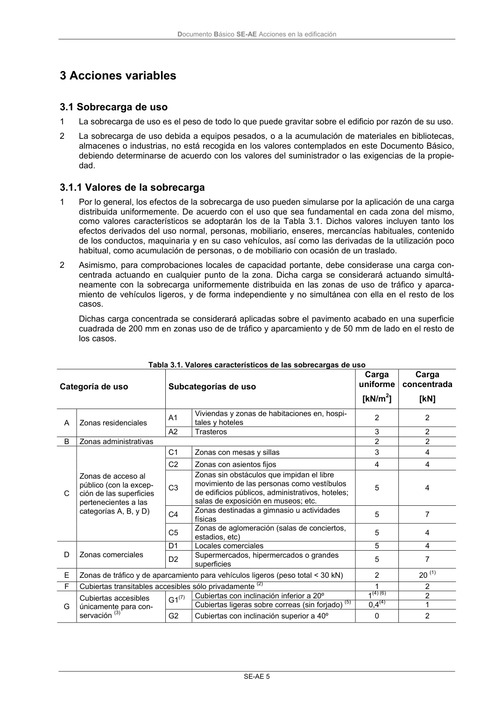
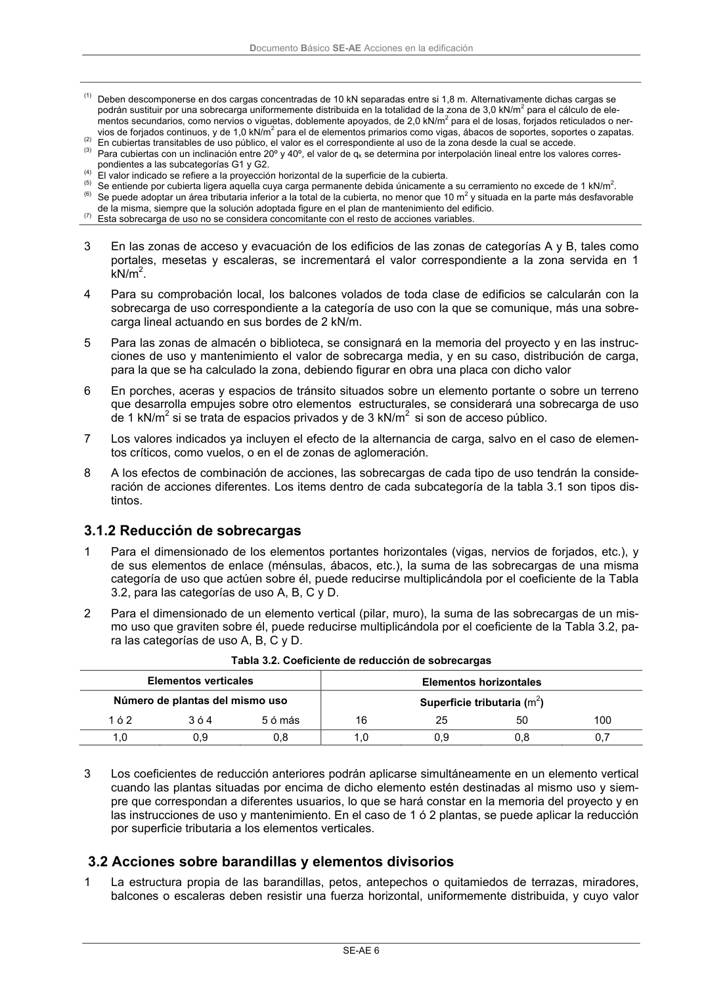

DB-SE-AE Acciones en la edificación · edición 2009-04 · capa oficial
Documento DB-SE-AE-oficial · SHA-256 del PDF 26116e5088955f0c6963a6187270cad282e1e7bf5a53a90f695c8fa50b4e4487
Copia fiel del PDF fuente · Fuente oficial
Ficha de la disposición en la fuente oficial
Formatos: JSON del segmento · Markdown
3.1.1 Valores de la sobrecarga 1 Por lo general, los efectos de la sobrecarga de uso pueden simularse por la aplicación de una carga distribuida uniformemente. De acuerdo con el uso que sea fundamental en cada zona del mismo, como valores característicos se adoptarán los de la Tabla 3.1. Dichos valores incluyen tanto los efectos derivados del uso normal, personas, mobiliario, enseres, mercancías habituales, contenido de los conductos, maquinaria y en su caso vehículos, así como las derivadas de la utilización poco habitual, como acumulación de personas, o de mobiliario con ocasión de un traslado. 2 Asimismo, para comprobaciones locales de capacidad portante, debe considerase una carga con- centrada actuando en cualquier punto de la zona. Dicha carga se considerará actuando simultá- neamente con la sobrecarga uniformemente distribuida en las zonas de uso de tráfico y aparca- miento de vehículos ligeros, y de forma independiente y no simultánea con ella en el resto de los casos. Dichas carga concentrada se considerará aplicadas sobre el pavimento acabado en una superficie cuadrada de 200 mm en zonas uso de de tráfico y aparcamiento y de 50 mm de lado en el resto de los casos. Tabla 3.1. Valores característicos de las sobrecargas de uso Categoría de uso Subcategorías de uso Carga uniforme [kN/m2] Carga concentrada [kN] A1 Viviendas y zonas de habitaciones en, hospi- tales y hoteles 2 2 A Zonas residenciales A2 Trasteros 3 2 B Zonas administrativas 2 2 C1 Zonas con mesas y sillas 3 4 C2 Zonas con asientos fijos 4 4 C3 Zonas sin obstáculos que impidan el libre movimiento de las personas como vestíbulos de edificios públicos, administrativos, hoteles; salas de exposición en museos; etc. 5 4 C4 Zonas destinadas a gimnasio u actividades físicas 5 7 C Zonas de acceso al público (con la excep- ción de las superficies pertenecientes a las categorías A, B, y D) C5 Zonas de aglomeración (salas de conciertos, estadios, etc) 5 4 D1 Locales comerciales 5 4 D Zonas comerciales D2 Supermercados, hipermercados o grandes superficies 5 7 E Zonas de tráfico y de aparcamiento para vehículos ligeros (peso total < 30 kN) 2 20 (1) F Cubiertas transitables accesibles sólo privadamente (2) 1 2 Cubiertas con inclinación inferior a 20º 1(4) (6) 2 G1(7) Cubiertas ligeras sobre correas (sin forjado) (5) 0,4(4) 1 G Cubiertas accesibles únicamente para con- servación (3) G2 Cubiertas con inclinación superior a 40º 0 2 Documento Básico SE-AE Acciones en la edificación SE-AE 6 (1) Deben descomponerse en dos cargas concentradas de 10 kN separadas entre si 1,8 m.Alternativamente dichas cargas se podrán sustituir por una sobrecarga uniformemente distribuida en la totalidad de la zona de 3,0 kN/m 2 para el cálculo de ele- mentos secundarios, como nervios o viguetas, doblemente apoyados, de 2,0 kN/m 2 para el de losas, forjados reticulados o ner- vios de forjados continuos, y de 1,0 kN/m 2 para el de elementos primarios como vigas, ábacos de soportes, soportes o zapatas. (2)En cubiertas transitables de uso público, el valor es el correspondiente al uso de la zona desde la cual se accede. (3) Para cubiertas con un inclinación entre 20º y 40º, el valor de qk se determina por interpolación lineal entre los valores corres- pondientes a las subcategorías G1 y G2. (4) El valor indicado se refiere a la proyección horizontal de la superficie de la cubierta. (5) Se entiende por cubierta ligera aquella cuya carga permanente debida únicamente a su cerramiento no excede de 1 kN/m 2. (6)Se puede adoptar un área tributaria inferior a la total de la cubierta, no menor que 10 m 2 y situada en la parte más desfavorable de la misma, siempre que la solución adoptada figure en el plan de mantenimiento del edificio. (7)Esta sobrecarga de uso no se considera concomitante con el resto de acciones variables. 3 En las zonas de acceso y evacuación de los edificios de las zonas de categorías A y B, tales como portales, mesetas y escaleras, se incrementará el valor correspondiente a la zona servida en 1 kN/m2. 4 Para su comprobación local, los balcones volados de toda clase de edificios se calcularán con la sobrecarga de uso correspondiente a la categoría de uso con la que se comunique, más una sobre- carga lineal actuando en sus bordes de 2 kN/m. 5 Para las zonas de almacén o biblioteca, se consignará en la memoria del proyecto y en las instruc- ciones de uso y mantenimiento el valor de sobrecarga media, y en su caso, distribución de carga, para la que se ha calculado la zona, debiendo figurar en obra una placa con dicho valor 6 En porches, aceras y espacios de tránsito situados sobre un elemento portante o sobre un terreno que desarrolla empujes sobre otro elementos estructurales, se considerará una sobrecarga de uso de 1 kN/m2 si se trata de espacios privados y de 3 kN/m2 si son de acceso público. 7 Los valores indicados ya incluyen el efecto de la alternancia de carga, salvo en el caso de elemen- tos críticos, como vuelos, o en el de zonas de aglomeración. 8 A los efectos de combinación de acciones, las sobrecargas de cada tipo de uso tendrán la conside- ración de acciones diferentes. Los items dentro de cada subcategoría de la tabla 3.1 son tipos dis- tintos.

